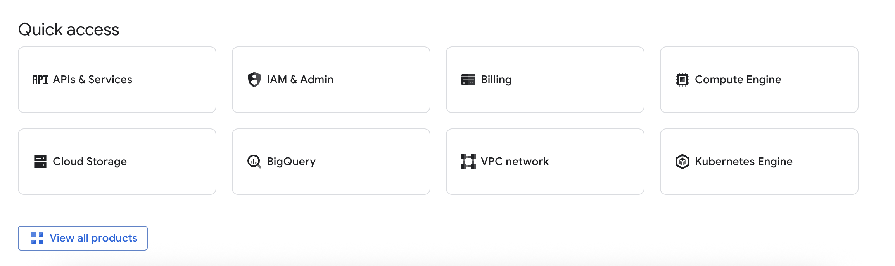

Labeling Guidelines and GCP
August 17, 2025
Today I was going to label the rest of the dataset and work on training/evaluating. However, when I was looking into evaluating, I was reminded that evaluation of a model is based on ground truths of data, in other words, the labels. That means if my data is not labeled really well I might not be able to gain the most from evaluations. So I sent clarifiation emails to make sure that everything was following a guideline.

Moving forward, I also took a look at Google Cloud Platform. It involves opening up an account, starting a virtual machine in the cloud and then connecting to it via my terminal so I can use GPU's for computation on VSCode. Originally, I've experimented with training on Colab but I realized that there was a big issue with runtime and not being able to leave it training for a while. With GCP I won't have to worry and will be able to train indefinitely which is super cool.